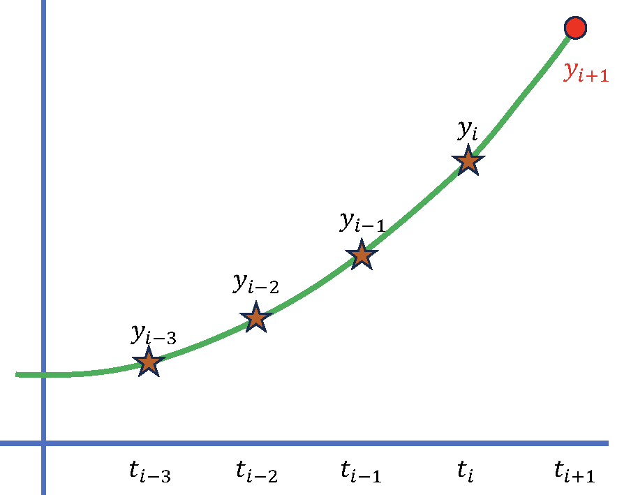

Code
today <- Sys.Date()
format(today, format="Revised: %B %d %Y")[1] "Revised: May 07 2024"All the methods so far belong to a class of methods known as one-step methods, which is to say that all of the information used in the computation of the approximation at the next time step only used information from the immediately prior time step.
However, you might ask yourself, can we use information from other previous steps to improve our approximation. This would be especially useful in the case when each of the function evaluations are computationally expensive. This leads us to proposing a set of methods that attempt to take advantage of all of this additional information already available to us.
Let’s first start with some notation and a definition. As before, let’s assume that we have equally spaced time steps such that \(t_i = a + ih, i=0, 1, N.\)
Definition: an s-step linear multistep method for solving the IVP has a difference equation of the form:
\[ \begin{aligned} \sum_{j=0}^{s} \alpha_j y_{i+1-j} = h\sum_{j=0}^{s} \beta_j f_{i+1-j}, \end{aligned} \tag{29.1}\] where we let \(f_{i+1-j} = f(t_{i+1-j},y_{i+1-j})\). Without loss of generality, we can assume that \(\alpha_0 = 1\) since we can rescale all of the equations.
It will also be useful to distinguish between cases that need the function value \(f(t_{i+1},y_{i+1})\) at the next time step to compute \(y_{i+1}\). In particular, if \(b_0 = 0\) the method is called an explicit (open) method and we can write Equation 29.1 as:
\[ \begin{aligned} y_{i+1} = -\sum_{j=1}^{s} \alpha_j y_{i+1-j} + h\sum_{j=1}^{s} \beta_j f_{i+1-j} \end{aligned} \]
Notice that we can recover Euler’s method from the explicit form of this equation by setting \(\beta_0 = 0, s=1, \alpha_1 = -1, \beta_1 =1.\)
The second case is if we let \(b_0 \neq 0\) and the method is then called implicit (closed) as \(y_{i+1}\) appears on both sides of Equation 29.1 so it is only implicitly defined.
\[ \begin{aligned} y_{i+1} - h \beta_0 f_{i+1}= -\sum_{j=1}^{s} \alpha_j y_{i+1-j} + h\sum_{j=1}^{s} \beta_j f_{i+1-j} \end{aligned} \]
How then should be develop higher-order formulas for solving the IVP. We’ve already decided that it would be good to use some of the past information and in particular, we should try to use the past values of \(y_i\) that we have already computed. This leads to the following idea:

There are many methods one could use to solve the IVP and we will give examples of several of the more popular multi-step methods including the Adams-Bashforth (explicit) and Adams-Moulton (implicit) methods. We will not derive the following methods here, but if you’re interested we give a brief derivation in the supplemental section Section 29.4.
Adams-Bashforth fourth-order
\[ \begin{aligned} y_0 &= \alpha_0, \; y_1 = \alpha_1, \; y_2 = \alpha_2, \; y_3 = \alpha_3, \\ y_{i+1} & = y_{i} + \frac{h}{24} \left[ 55 f(t_{i}, y_{i}) - 59 f(t_{i-1}, y_{i-1}) + 37 f(t_{i-2}, y_{i-2}) - 9 f(t_{i-3}, y_{i-3}) \right] \end{aligned} \]
Adams-Moulton fourth-order
\[ \begin{aligned} y_0 &= \alpha_0, \; y_1 = \alpha_1, \; y_2 = \alpha_2, \\ y_{i+1} & = y_{i} + \frac{h}{24} \left[ 9 f(t_{i+1}, y_{i+1}) + 19 f(t_{i}, y_{i}) - 5 f(t_{i-1}, y_{i-1}) + f(t_{i-2}, y_{i-2}) \right] \end{aligned} \]
We demonstrated the use of a simple ODE/IVP solver by solving a problem of predicting the breakout of an epidemic using data from Merced County COVID cases taken from: USA Facts Merced County, California coronavirus cases and deaths
To model an epidemic of an infectious disease, the usual approach is to use what is known as the SIR Model.
The SIR equations are given by: \[\begin{aligned}\frac{dS}{dt} &= - \alpha S I \\\frac{dI}{dt} &= \alpha S I - \gamma I \\\frac{dR}{dt} &= \gamma I \\N &= S + I + R\end{aligned} \] where \(S\) is the number of susceptible (healthy) individuals, \(I\) represents the number of infected individuals, \(R\) is the number of people who have recovered from the disease, and \(N\) is the total population.
The demo we presented had 4 parameters you can play with: initial population (N), the number of days to run the simulation for, and the 2 parameters that represent the rates between susceptible and infected (\(\alpha\)) and between infected and recovered (\(\gamma\)).
The solver used comes from the deSolve package in R called ode. The default solver is “lsoda” (Petzold & Hindmarsh), but other choices are available. Calling the ode solver requires the initial conditions (init), the times at which to compute the solution (times, the function to evaluate the ode (sir in this case), and a list of parameters that the ode solver passes along to the ode function.
The original data taken from the site gave us the following plot:
In the demo, we played around with the parameters for the SIR model to match the data as best we could. According to the model, the basic Reproduction number \(R_0 = 8.5.\) For comparison, for measles one of the more contagious diseases, \(R_0 = 12-18\) while the normal flu has \(R_0 \approx 1.28\).
Let’s take a step back and summarize our main results:
| Method | Local Truncation Error | Explicit/Implicit | Stability |
|---|---|---|---|
| Euler | \(\frac{hM}{2L} \left[ e^{L(t_i-a)} - 1 \right]\) | E | |
| Backward Euler | \(O(h)\) | I | |
| Higher Order Taylor | \(O(h^n)\) | E | |
| Midpoint | \(O(h^2)\) | E | |
| Runge-Kutta Order 2 | \(O(h^2)\) | E | |
| Runge-Kutta Order 4 | \(O(h^4)\) | E | |
| Adams-Bashforth | \(O(h^4)\) | E | |
| Adams-Moulton | \(O(h^4)\) | I |
We did not talk much about the stability of the algorithms, but this will prove to be an important characteristic of any method we choose for an IVP.
First we write:
\[ \begin{aligned} y(t_{i+1}) - y(t_{i}) &= \int_{t_{i}}^{t_{i+1}} y^{\prime} (t) dt \\ &= \int_{t_{i}}^{t_{i+1}} f(t, y(t)) dt \end{aligned} \]
Let \(y_i \approx y(t_i)\), and rearrange the equation to give us an expression for the approximation at the next time step \(t_{i+1}\)
\[ y(t_{i+1}) \approx y_{i} + \int_{t_{i}}^{t_{i+1}} f(t, y(t)) dt \tag{29.2}\]
This should remind us of a similar problem we studied earlier, namely the numerical approximation for an integral, i.e. quadrature. Recall that in the earlier case, we chose to replace the function by a polynomial, for which it will be easier to compute the integral. In that case, we used a Lagrange interpolating polynomial.
In this case, it will be more convenient to use a Newton backward-difference polynomial because we can more easily incorporate previously calculated values.
As reminder we can write the \(m-1\) degree interpolating polynomial as (ref: equation 3.13, p. 130 textbook):
\[ P_{m-1} (t) = \sum_{k=0}^{m-1}(-1)^k \binom{-s}{k} \nabla^k f(t). \tag{29.3}\]
We can then use this polynomial (along with the remainder term) as an approximation to \(f(t,y)\)
\[ f(t,y) = P_{m-1}(t) + \frac{1}{m!} f^{(m)}(\xi_i,y(\xi_i))(t - t_{i})(t - t_{i-1}) \ldots (t - t_{i+1-m}) \tag{29.4}\]
where \(\xi_i \in (t_{i+1-m}, t_i)\).
Substituting Equation 29.3 and Equation 29.4 into Equation 29.2, and taking the integral of both sides, yields:
\[ \begin{aligned} \int_{t_{i}}^{t_{i+1}} f(t, y(t)) dt &= \int_{t_{i}}^{t_{i+1}} \sum_{k=0}^{m-1} (-1)^k \binom{-s}{k}\nabla^{k} f(t_i, y(t_i)) dt \\ &+ \int_{t_{i}}^{t_{i+1}} \frac{1}{m!} f^{(m)}(\xi_i,y(\xi_i))(t - t_{i})(t - t_{i-1}) \ldots (t - t_{i+1-m}) dt. \end{aligned} \tag{29.5}\]
The integral is easier to solve by using the variable substitution:
\[ \begin{aligned} t &= t_i + sh \\ dt &= h ds \end{aligned} \]
\[ \begin{aligned} \int_{t_{i}}^{t_{i+1}} f(t, y(t)) dt &= h \left[ \sum_{k=0}^{m-1} \nabla^{k} f(t_i, y(t_i)) \; (-1)^k \int_{0}^{1} \binom{-s}{k} ds \right] \\ &+ \frac{h^{m+1}}{m!} \int_{0}^{1} (s)(s +1) \ldots (s+m-1) f^{(m)}(\xi_i,y(\xi_i)) ds \end{aligned} \]
The integrals involving the binomial function are easily computed. Using the values of the computed integrals in Table 5.12, we can write the formula as
\[ \begin{aligned} \int_{t_{i}}^{t_{i+1}} f(t, y(t)) dt &= h\left[ f(t_i,y_i) + \frac{1}{2} \nabla f(t_i,y_i) + \frac{5}{12} \nabla^2 f (t_i,y_i) + \frac{3}{8} \nabla^3 f (t_i,y_i)+ \ldots \right] \\ &+ \frac{h^{m+1}}{m!} \int_{0}^{1} (s)(s +1) \ldots (s+m-1) f^{(m)}(\xi_i,y(\xi_i)) ds \end{aligned} \]
Note: The header in Table 5.12 in your textbook incorrectly states the second column. It should read \((-1)^k \int_0^1 \binom{-s}{k}ds\)
Recall that \(\nabla p_n = p_n - p_{n-1}, n \geq 1\) and \(\nabla^{k} p_n = \nabla ( \nabla^{k-1} p_n ), k \geq 2\) (see p. 130, textbook)
The last step is to recognize that: \[ \begin{aligned} \nabla^0 f(t_i,y_i) &= f(t_i,y_i) \\ \nabla^1 f(t_i,y_i) &= f(t_i,y_i) - f(t_{i-1},y_{i-1}) \\ \nabla^2 f(t_i,y_i) &= \nabla ( \nabla^1 f(t_i,y_i)) \\ \nabla^3 f(t_i,y_i) &= \nabla ( \nabla^2 f(t_i,y_i)) \end{aligned} \]
to expand the backward difference terms in the integral, followed by collecting like terms to arrive at the Adams-Bashforth Four-Step (\(m=4\)) Method:
\[ \begin{aligned} y_0 &= \alpha_0, \; y_1 = \alpha_1, \; y_2 = \alpha_2, \; y_3 = \alpha_3, \\ y_{i+1} & = y_{i} + \frac{h}{24} \left[ 55 f(t_{i}, y_{i}) - 59 f(t_{i-1}, y_{i-1}) + 37 f(t_{i-2}, y_{i-2}) - 9 f(t_{i-3}, y_{i-3}) \right] \end{aligned} \]
today <- Sys.Date()
format(today, format="Revised: %B %d %Y")[1] "Revised: May 07 2024"